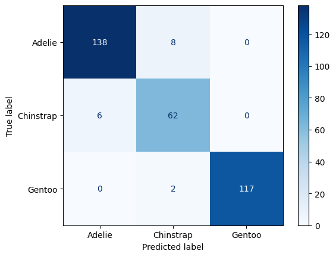
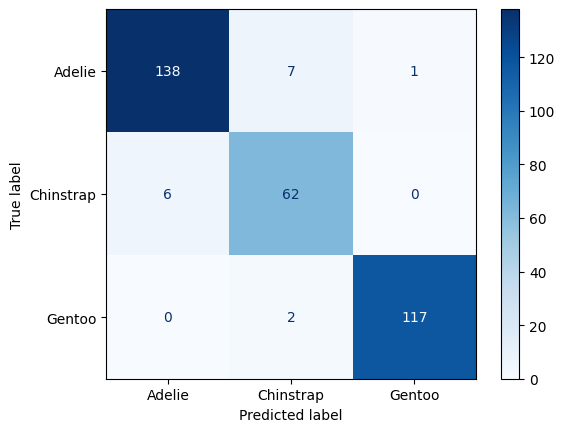

#AUC Scoreknn_pipeline1.fit(X, y)# Binarize the true labels for multi-class AUC calculationy_bin = label_binarize(y, classes=np.unique(y))# Get predicted probabilities for each classy_pred_prob = knn_pipeline1.predict_proba(X)# Calculate and print the AUC for each species in one line per speciesfor i, species_name inenumerate(np.unique(y)):print(f"AUC score for {species_name}: {roc_auc_score(y_bin[:, i], y_pred_prob[:, i])}")
AUC score for Adelie: 0.954050985275804
AUC score for Chinstrap: 0.9468091009988902
AUC score for Gentoo: 0.9937171130134297
#AUC Scoreknn_pipeline2.fit(X, y)# Binarize the true labels for multi-class AUC calculationy_bin = label_binarize(y, classes=np.unique(y))# Get predicted probabilities for each classy_pred_prob = knn_pipeline2.predict_proba(X)# Calculate and print the AUC for each species in one line per speciesfor i, species_name inenumerate(np.unique(y)):print(f"AUC score for {species_name}: {roc_auc_score(y_bin[:, i], y_pred_prob[:, i])}")
AUC score for Adelie: 0.918687275657461
AUC score for Chinstrap: 0.8973917869034407
AUC score for Gentoo: 0.9912824943061337
#Decision tree model#2 bucketstree_pipeline1 = Pipeline( [("preprocessing", ct), ("tree", DecisionTreeClassifier(max_depth=2))])#Confusion Matrix#Perform cross-validated predictionsy_pred_cv = cross_val_predict(tree_pipeline1, X, y, cv=5)#Print confusion matrix and classification reportcm = confusion_matrix(y, y_pred_cv)print(cm)disp = ConfusionMatrixDisplay(confusion_matrix=cm, display_labels=np.unique(y))disp.plot(cmap='Blues')
[[138 8 0]
[ 6 62 0]
[ 0 2 117]]

#Overall Accuracycv_accuracy = cross_val_score(tree_pipeline1, X, y, cv=5, scoring='accuracy').mean()cv_accuracy
0.9518769787426503
#Precision, Recall, and F1 Scorereport3 = classification_report(y, y_pred_cv, target_names=['Adelie', 'Chinstrap', 'Gentoo'])print(report3)
#AUC Scoretree_pipeline1.fit(X, y)# Binarize the true labels for multi-class AUC calculationy_bin = label_binarize(y, classes=np.unique(y))# Get predicted probabilities for each classy_pred_prob = tree_pipeline1.predict_proba(X)# Calculate and print the AUC for each species in one line per speciesfor i, species_name inenumerate(np.unique(y)):print(f"AUC score for {species_name}: {roc_auc_score(y_bin[:, i], y_pred_prob[:, i])}")
AUC score for Adelie: 0.9808438942202037
AUC score for Chinstrap: 0.9689234184239733
AUC score for Gentoo: 0.9987826906463521
#Decision tree model#3 bucketstree_pipeline2 = Pipeline( [("preprocessing", ct), ("tree", DecisionTreeClassifier(max_depth=3))])#Confusion Matrix#Perform cross-validated predictionsy_pred_cv = cross_val_predict(tree_pipeline1, X, y, cv=5)#Print confusion matrix and classification reportcm = confusion_matrix(y, y_pred_cv)print(cm)disp = ConfusionMatrixDisplay(confusion_matrix=cm, display_labels=np.unique(y))disp.plot(cmap='Blues')
[[138 7 1]
[ 6 62 0]
[ 0 2 117]]

#Overall Accuracycv_accuracy = cross_val_score(tree_pipeline2, X, y, cv=5, scoring='accuracy').mean()cv_accuracy
0.9608774310266849
#Precision, Recall, and F1 Scorereport4 = classification_report(y, y_pred_cv, target_names=['Adelie', 'Chinstrap', 'Gentoo'])print(report4)
#AUC Scoretree_pipeline2.fit(X, y)# Binarize the true labels for multi-class AUC calculationy_bin = label_binarize(y, classes=np.unique(y))# Get predicted probabilities for each classy_pred_prob = tree_pipeline2.predict_proba(X)# Calculate and print the AUC for each species in one line per speciesfor i, species_name inenumerate(np.unique(y)):print(f"AUC score for {species_name}: {roc_auc_score(y_bin[:, i], y_pred_prob[:, i])}")
AUC score for Adelie: 0.9950919346568017
AUC score for Chinstrap: 0.9932574916759157
AUC score for Gentoo: 0.9999410979345009
from sklearn.metrics import roc_curve, aucimport pandas as pdfrom plotnine import*# Fit the modelknn_pipeline2.fit(X, y)# Get predicted probabilitiesy_pred_proba = knn_pipeline2.predict_proba(X)# Select probabilities for 'Adelie' (assuming it's the first class in the output array)adelie_probs = y_pred_proba[:, 0] # Update index if necessary# Create binary labels for 'Adelie' vs othersadelie_labels = (y =='Adelie').astype(int)# Calculate ROC curve valuesfpr, tpr, thresholds = roc_curve(adelie_labels, adelie_probs)# Calculate AUC scoreroc_auc = auc(fpr, tpr)# Prepare data for plottingdf_roc = pd.DataFrame({'fpr': fpr, 'tpr': tpr})# Create the ROC plot using plotnineroc_plot = (ggplot(df_roc, aes(x='fpr', y='tpr')) + geom_line(size=1, color='blue') + geom_abline(linetype='dashed', color='gray') + labs(title='ROC Curve for Adelie Species', x='False Positive Rate', y='True Positive Rate') + annotate("text", x=0.6, y=0.3, label=f"AUC = {roc_auc:.2f}", size=10, color="blue") + theme_minimal())roc_plot